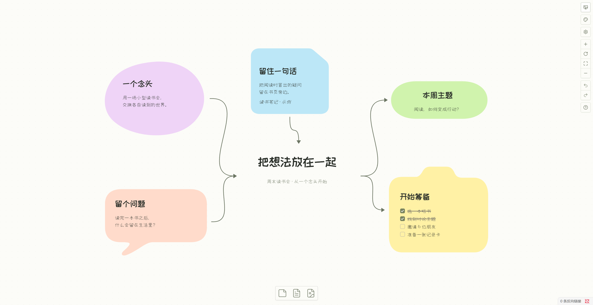
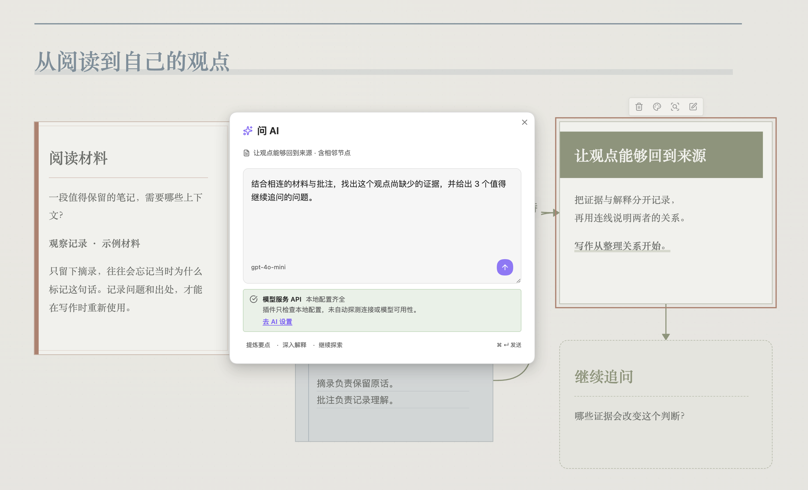
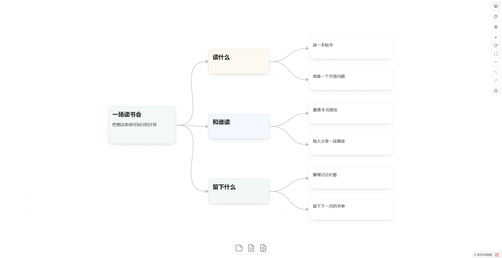

免费开源 · 在 Obsidian 中使用
Obsidian Canvas
增强插件
Better Canvas 是一款 Obsidian 插件，为原生 Canvas 加入 AI 助手、思维导图与六款画布主题。安装并启用后，直接在 Obsidian 的画布里使用。
需要桌面端 Obsidian 1.14.4 或更高版本

答案，就留在
问题旁边。
在 Obsidian Canvas 中选中一张或多张卡片，带着已有内容向 AI 提问。回答生成新的节点，自动连接来源，让每一次追问都有迹可循。


从已有内容继续
总结资料、比较观点、扩展想法。流式查看回答，随时停止或重新生成。
把理解变成结构
让 AI 生成思维导图或学习闪卡；支持导出为 Spaced Repetition 可用的 Markdown 牌组。
选择自己的模型
支持 OpenAI 兼容接口、Anthropic、Gemini，也可接入已安装并登录的 Codex、OpenCode 等本地 Agent。
AI 为可选功能，需自行配置，服务可能收费。提示词及相关上下文会发送到所选服务；本地 Agent 也可能调用远程模型。编辑、导图和主题无需配置 AI。
思路往哪走，
分支就往哪长。
在 Obsidian 原生画布中，用快捷键创建子节点和同级节点，向四个方向整理布局，也可以从 Markdown 一级标题开始搭建思维导图。


- Tab
- 创建子节点
- Enter
- 创建同级节点
- Alt + 方向键
- 选择相邻节点
- 左 / 右 / 上 / 下
- 四向自动布局
编辑文字时，用 Shift + Tab / Shift + Enter 创建节点。各组快捷键可在设置中关闭。
同一份想法，
不止一种模样。
为每张 Obsidian 画布单独选择主题。灵感便签、研究笔记、流程白板或手绘草图，选择适合内容的表达，保留原有文字、位置与连线。


预览展示真实插件界面。主题随画布保存；节点样式支持多选批量应用。
想法整理好，还可以继续。
边读边记固定 PDF 页面，提取摘录，使用钢笔和荧光笔批注。
分享思考演示画布，导出 PNG、SVG 或 JSON Canvas。
保持连接用节点链接、反向链接与 Canvas Portal 串起更多笔记。
静态导出可能与编辑视图不同；拼贴纸张纹理与胶带不在整图或选区静态导出中复现。查看已知限制
下一张画布，
从这里开始。
打开 Obsidian，进入「设置 → 第三方插件」，搜索 Better Canvas，安装并启用。
仅支持桌面端，需要 Obsidian 1.14.4 或更高版本。